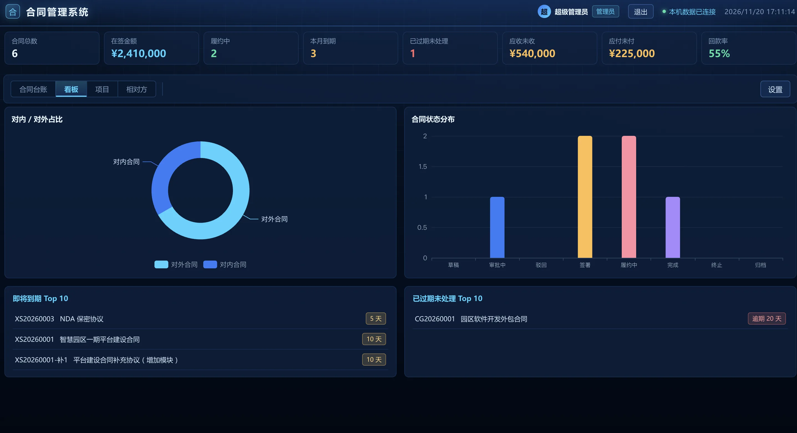
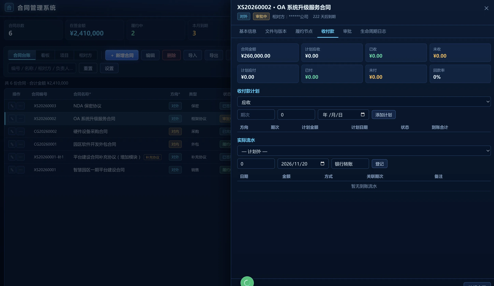

一屏看清合同家底
深色台账看板：合同总数、在签收入/支出、履约中、本月到期、应收未收、应付未付、回款率。打开第一屏就知道有多少合同、多少钱在签。
Excel 能记，但对内对外对不上；扫描件散在网盘微信；到期和回款全靠人盯。
销售合同在销售那、采购在项目那，扫描件在网盘和微信，找一份要半小时。
一个项目既有销售又有采购，金额关系全靠人记，汇总时总对不上。
续约、回款没人提醒，过期了才发现；月底再拉表算差额。
谁改了金额、谁换了文件，交接审计时只能翻聊天记录。
台账、项目、收付款、发票、到期提醒、回收站与备份恢复，收成一个你能自己掌控的小工具。
深色台账看板：合同总数、在签收入/支出、履约中、本月到期、应收未收、应付未付、回款率。打开第一屏就知道有多少合同、多少钱在签。
采购/外包与销售/框架/NDA 共用一张表，用「方向 / 类型」区分。编号自动生成（XS / CG），补充协议可一键从主合同创建。
项目卡片挂多份合同，收入/支出、已收/未收、已付/未付与净额分栏展示；台账支持按项目分组与下钻。
期次模板（一次性 / 首付尾款 / 按季度）批量生成计划；实际流水逐笔登记，差额高亮。罚息等性质不污染回款率。
开票 / 收票进合同 Tab 与全局发票视图，价税合计与税额可互算；作废留原因且不计入合计，票款闭环可追溯。
删除先进回收站，30 天内可原样恢复（含附件/流水/日志）。备份 zip 一键还原，恢复前自动再备份一份兜底。
桌面端、浏览器、手机读写的是同一份数据——不是各导一份 Excel 再对账。
一键启动服务
三端实时同库

默认端口 8788，给出地址、二维码与口令；可开「H5 只读」，防止现场误改。
手机 / 同事电脑访问 H5，查看合同、登记收付款；权限跟主机角色走。
IPC 与 HTTP 都进同一套 core.dispatch，不会出现好几份库各改各的。

与 IT-AMS 同源骨架：Electron 桌面端同时充当数据主机；需要协作时，主进程里一键拉起局域网服务。
选 sql.js 而不是原生 SQLite：绿色版解压即跑，免去 Electron ABI 坑。端口与 IT-AMS（8787）错开为 8788，同机可并存。
绿色版解压即用；数据写在本机目录，升级覆盖不易误删台账。
授权说明：正式版含试用与激活码门禁；社区版功能对齐、分发渠道见网盘说明。默认账号 admin / 123456（登录后请改密）。
解压后先运行随包 mac-first-run.sh 解除隔离，再双击「合同管理系统.app」。
不需要。数据在本机单文件 SQLite（contractams.sqlite）与附件目录。可用「备份」导出 zip；V1.2 支持一键从备份恢复。断网、内网隔离环境都能用。
V1.2 起删除默认进回收站：附件、流水、日志 30 天内可原样恢复；清空回收站才真删。仍建议定期备份。
确认手机与电脑同一 Wi‑Fi，访问完整地址含 /h5/ 并填写口令。Windows 防火墙常拦截入站，需放行 TCP 8788。可先开「H5 只读」降低误改风险。
姊妹产品：同一套 Electron + Vue3 + sql.js 主机模式。IT-AMS 管资产贴码盘点，CONTRACT-AMS 管合同台账与收付款；端口分别为 8787 / 8788，可同机并存。
面向同时跑多个项目、对内对外多份合同的中小台账（约万级以内）。定位是办公室局域网工具，不是大型 ERP / 法务 BPM。